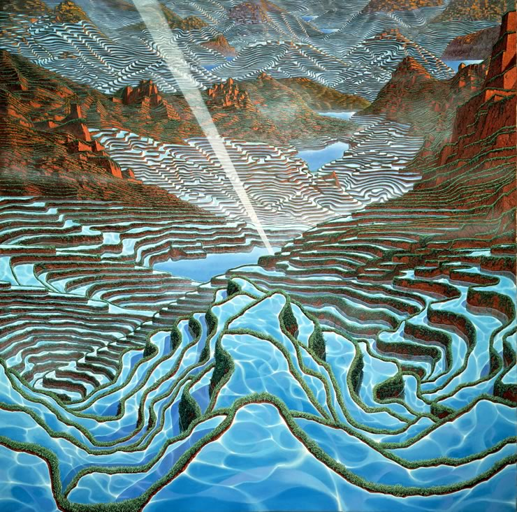
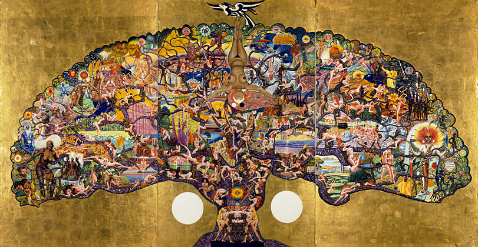
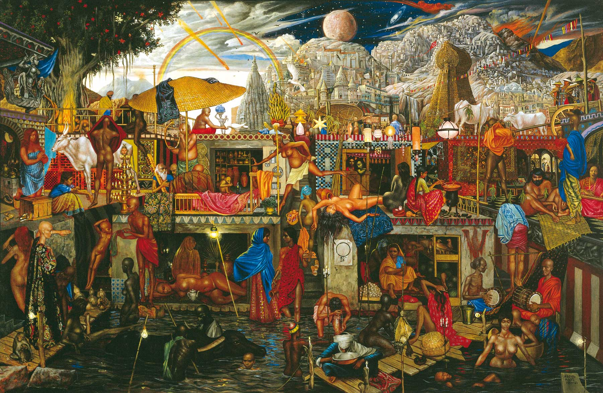
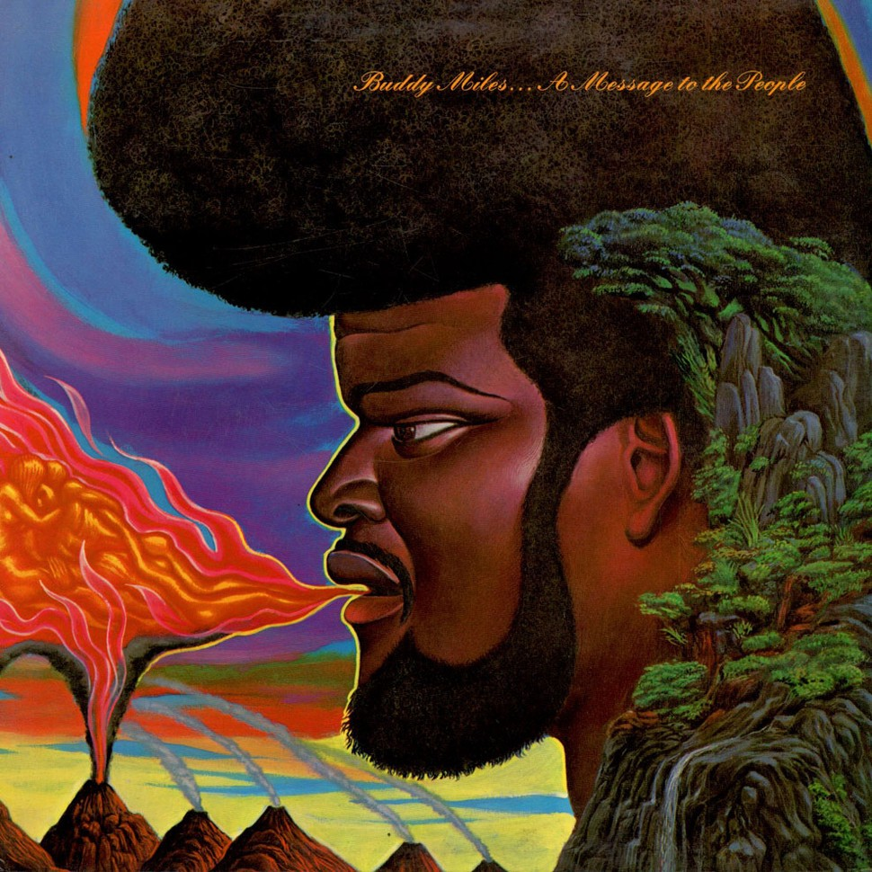

Peter Gric y su subrealismo fantastico
Matias Klarwein o Abdul Matias Klarwein (Hamburgo, Alemania, 9 de abril de 1932 - Deyá, España, 7 de marzo de 2002) fue un pintor surrealista célebre por su estilo considerado psicodélico (que él no reconoció).
Sus obras se hicieron famosas al aparecer ilustrando las portadas de discos de diversos artistas y grupos musicales.
Klarwein nació en Hamburgo en una familia judía. Su padre Joseph (en hebreo Yusef Ben Menachem), fue un arquitecto vinculado al movimiento Bauhaus y su madre Elsa Kühne fue cantante de ópera.
En 1934 con el auge del nacionalsocialismo en Alemania se desplazó con su familia a Palestina. Tras la formación del estado de Israel, su padre ganó el concurso para el diseño de la Knéset en Jerusalén.
En 1948, a la edad de 17 años se desplazó con su familia a París donde estudió con Fernand Léger y en la Ecole des Beaux-Arts. Primeramente se había interesado por el cine pero no pudo ingresar en la escuela de cinematografía al no haber acabado el bachillerato.
A continuacion algunas de sus obras
| Mische Technique | Flight to Egypt | (1959-61) | Unknown |
|---|---|---|---|
|  |  |  |  |